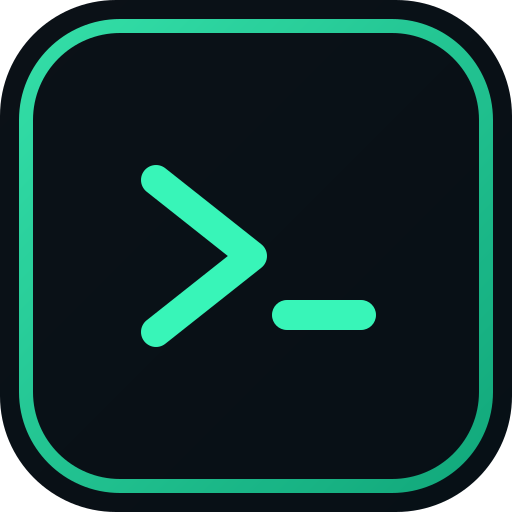
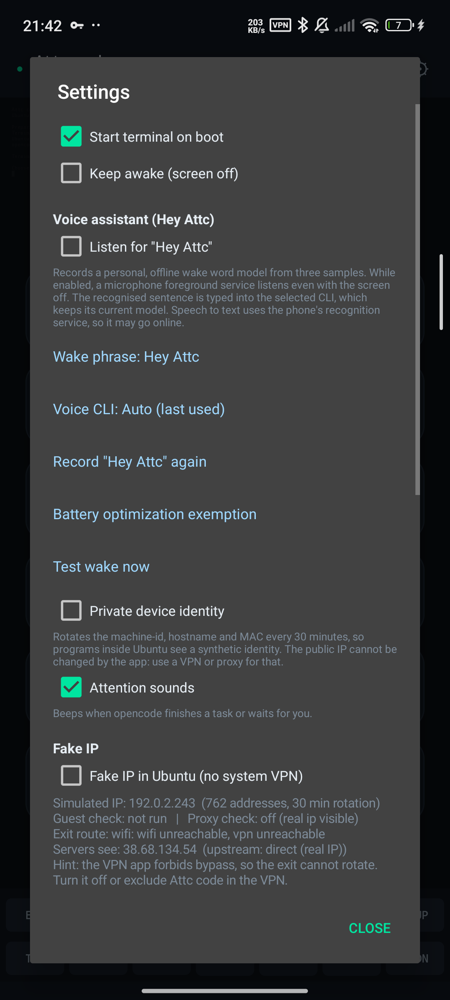
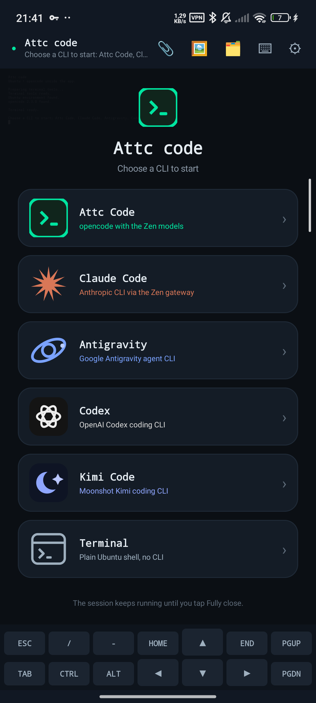

▣
Gerçek Ubuntu 24.04
proot ile çalışan arm64 userland. apt, python, node, git ve derleyiciler gerçek binary olarak çalışır; emülatör katmanı yok.

Attc CodeAndroid 8+ · arm64 · GPL-3.0 · root gerekmez
Attc Code, telefonda proot tabanlı Ubuntu 24.04 arm64 açar; opencode, Claude Code, Codex, Kimi ve Antigravity CLI'lerini tek dokunuşla başlatır. Ekran kapalıyken bile “Hey Attc” diyerek komut verirsiniz.
sha256 85f8ac71a5e029a8ee6165b611b38c4aba49bf21ee27b9b4b92e525148ff4a12
Neden Attc Code?
proot ile çalışan arm64 userland. apt, python, node, git ve derleyiciler gerçek binary olarak çalışır; emülatör katmanı yok.
Her soğuk açılışta opencode, Claude Code, Antigravity, Codex, Kimi veya düz terminal. Sıcak oturum kaldığı yerden devam eder.
“Hey Attc” uyanma kelimesi tamamen çevrimdışı MFCC/DTW ile tanınır. Komut Türkçe konuşmadan yazıya çevrilip seçili CLI'ye gider.
Shizuku varsa attc-ctl ile uygulama açma, medya oynatma, dokunma ve ekran görüntüsü gibi shell işleri ajandan yapılabilir.
Ekstra tuş satırı, yakınlaştırma, metin seçimi, pano, dosya iliştirme ve oturumlar arası geçiş; hepsi tek elle kullanılacak şekilde.
Ekran kapalı dinleme için kısmi wake lock; isteğe bağlı Wi-Fi kilidi, pil muafiyeti ve otomatik kota sıfırlama.
Siri benzeri, ama sizin sesinizle
Uyanma kelimesi bulut anahtarı istemez. Telefonda üç kez kaydettiğiniz örneklerden kişisel bir MFCC/DTW modeli çıkarılır; kelimeyi ve dil modelini siz seçersiniz. Uyandıktan sonra Google konuşma tanıma (tr-TR) cümleyi yazıya çevirir ve en son kullandığınız CLI/model oturumuna iletir.
attc-ctl köprüsüne talimat olarak eklenir.
Ekranlar

Kurulum
GitHub Releases sayfasından imzalı APK'yı indirin. Android 8.0+ ve arm64 gerekir. Bilinmeyen kaynak iznini yalnızca bu kurulum için açın.
İlk açılışta Ubuntu kök dosya sistemi hazırlanır. Bağlantı varsa seçtiğiniz CLI otomatik kurulur; sonraki açılışlarda seçim ekranı yine gelir.
Ayarlar → Voice assistant → mikrofon izni → üç kez “Hey Attc” kaydı. Ardından uyanma kelimesini değiştirebilir, pil muafiyeti verebilirsiniz.
F-Droid
Depo GPL-3.0 ile lisanslanır. F-Droid mağazası için fastlane metinleri, ekran görüntüleri, video ve fdroid/com.attc.opencode.yml tarifi depoda hazır. Resmî listelemeye kabul için F-Droid'in kendi derleme sunucusunda üretilen APK gerekir; süreç fdroid/README.md içinde adım adım anlatılır.
Geliştirici
git clone https://github.com/Attc-Config-Technician/Attc-Code.git
cd Attc-Code
# Termux: aapt2, d8, apksigner, javac ve android.jar gerekir
VERSION_CODE=83 VERSION_NAME=5.16 bash tools/build.shAyrıntılar ve ortam değişkenleri için README. Derleme çıktısı dist/, cihaza teslim kopyası /storage/emulated/0/ATTC OPENCODE/.